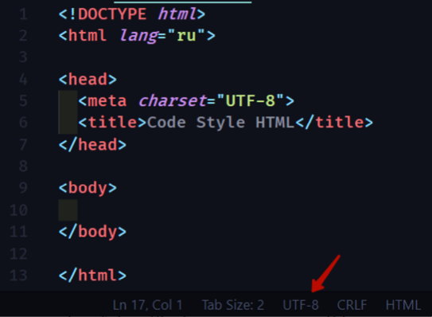
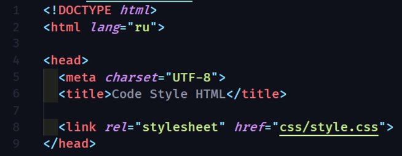

Code Style
!DOCTYPE
В начале страницы обязательно должен быть указан актуальный <!DOCTYPE html>, чтобы работать в режиме стандартов и последовательного рендеринга элементов в каждом доступном браузере.
Атрибут локализации
Для элемента <html> в атрибуте lang должен указываться соответствующий язык документа.
Это нужно для правильной работы синтеза речи, для переводчиков и поисковиков.
Вырезка из спецификации HTML5
Разработчикам рекомендуется указывать атрибут языка в начале html файла, тем самым указывая на принадлежность языка документа. Это способствует инструментам генерации голоса определить то, какое произношение использовать, а инструментам перевода определить каким правилам придерживаться и так далее.
Кодировка символов документа
Кодировка символов на странице всегда должна быть явно указана, чтобы обеспечить корректное отображение текста.
Для Кириллицы нужно использовать UTF-8 кодировку, убедитесь что ваш документ так же имеет кодировку UTF-8
Базовый синтаксис
Теги и их атрибуты пишутся строчными буквами.
Для значений атрибутов всегда используются двойные кавычки.
Для отступов у вложенных элементов используется отступ в 2 пробела (или табуляция размером 2 пробела).

Закрывающие теги
Закрывающий слеш у одиночных тегов (<img>, <br> и другие) не ставится.
В остальных случаях , как <body></body>, <p></p> или <li></li>, обязателен закрывающий тег.
Подключение стилей
Файл стилей подключается с помощью тега <link> внутри тега <head>.
Обязательный атрибут rel - со значением stylesheet, иначе браузер не поймет что вы подключили.
Атрибут type="text/css” писать не нужно в современной версии HTML
Атрибуты
Атрибут класса у HTML-элементов пишется первым.
Так проще распознать его, остальные атрибуты можно указывать в любом порядке, но желательно чтобы их порядок от элемента к элементу сохранялся.
Для логических атрибутов, таких как checked, disabled, required и тд, значение не указывается
ALT - атрибут
Обязательно нужно указывать атрибут alt у тега img, чтобы было чем его "заменить" если вдруг изображение не загрузилось
Так же значение alt атрибута очень важно, для людей использующих вспомогательные технологии, например экранные читалки, они не видят интерфейс, а "читают" сайты с помощью экранного диктора. Программа зачитывает для них alt атрибут чтобы было понятно что на изображении.
Валидность HTML
Документ должен проходить проверку на валидность HTML.
Для проверки используется валидатор w3c https://validator.w3.org/#validate_by_input